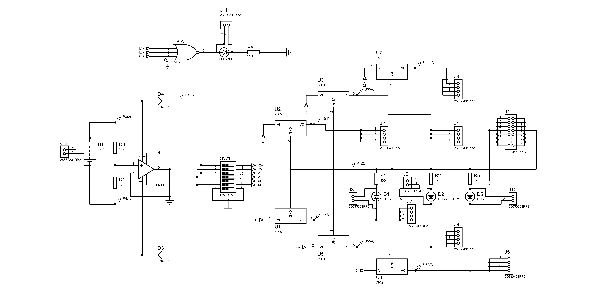
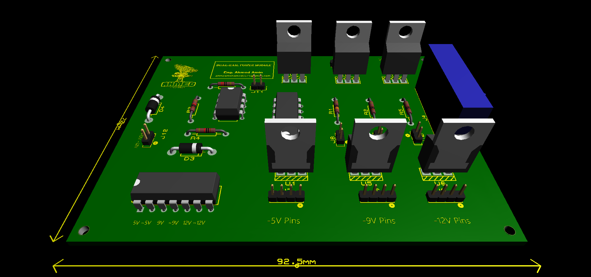

Dual Rail Power Supply Fixed Output
"Designing a compact dual-rail power module for lab and embedded systems with ±5V, ±9V, ±12V regulated outputs and visual indicators for quick diagnostics."
Project information
- Category: Analog & PCB Design
- Purpose: Dual-Rail power supply for Analog Circuits
- Project date: 12/15/2024
- Project Team: Ahmed Amin
- Project Video: N/A
Overview
The Dual Rail Power Supply module is designed to provide stable and regulated positive and negative voltage rails required for analog signal processing, op-amp circuits, RF modules, and lab-grade test environments. The board delivers ±5V, ±9V, and ±12V rails using linear regulators from the 78xx/79xx series. Visual indicators (LEDs) are integrated for each rail to verify functionality and monitor status. This compact, Proteus-designed module features a clean layout, reliable protection components, and is ideal for powering sensitive analog stages or dual-supply embedded devices.
Principle of Operation
The module is powered by a 32V regulated DC input, which is distributed to a set of six linear voltage regulators:
Positive rails: 7805 (+5V), 7809 (+9V), 7812 (+12V)
Negative rails: 7905 (−5V), 7909 (−9V), 7912 (−12V)
Each regulator steps down the input to provide clean and stable dual-polarity outputs.
Protection diodes are added to prevent reverse current or polarity damage, and status LEDs are included on each rail for easy monitoring.
All outputs are accessible via pin headers, making the board ideal for powering analog stages, op-amp circuits, or other systems requiring symmetric power supplies.
Circuit Design Overview
This board is designed for reliable multi-rail power distribution with emphasis on current handling, thermal behavior, and safe lab usage.
Each regulator is expected to handle typical analog/RF load currents (~100–300 mA per rail) with input power dissipation managed through:
Copper-filled areas under regulators to enhance heat dissipation
Wide power traces to minimize voltage drop and resistive losses
Separated grounding paths to reduce noise coupling between positive and negative rails
The board avoids heatsinks by relying on the moderate current draw of most target applications, but can be passively cooled through the PCB itself.
LED indicators are placed post-regulator to reflect true rail presence rather than just input status, improving debugging during bench testing.
All components are through-hole for easy soldering and field repairs.

PCB Layout Overview

The layout is optimized for low-noise analog use, prioritizing trace symmetry and rail separation. Voltage regulators are spaced to reduce thermal buildup and simplify heatsink access if needed.
High-current traces are widened and routed with minimal bends to reduce resistive losses. Each output rail has a clearly labeled header aligned by voltage group, improving usability during rapid prototyping.
All components are through-hole for easier soldering and maintenance, and the ground plane is kept clean to prevent interference between positive and negative regulators.
The overall footprint is compact (92.5 mm × 72 mm), making it suitable for benchtop use or enclosure integration without sacrificing accessibility.
3D view
The 3D layout showcases a compact, clean board with all through-hole components clearly positioned for accessibility and heat distribution. Each voltage rail is labeled, with output headers and LEDs arranged for intuitive use in both prototyping and enclosure setups.
